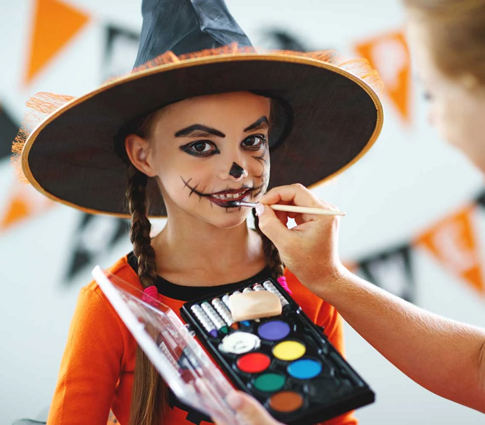
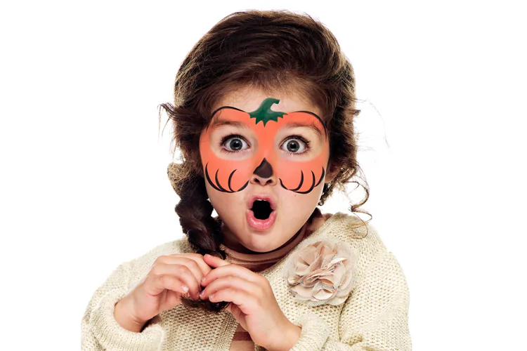

Malování na obličej pro děti při pálení čarodějnic: Kouzlo, barvy a spousta smíchu
Když se mísí starobylá tradice pálení čarodějnic s moderní zábavou, vzniká nezapomenutelná oslava plná plamenů, humoru a – hlavně – barevných obličejů našich nejmenších umělců. V dnešní době se i děti mohou stát součástí této kouzelné atmosféry, kdy tradice není jen o plamenech, ale i o radosti, kreativitě a veselém malování na obličej.
Proč právě dětské malování na obličej?
Když se blíží noc pálení čarodějnic, oheň symbolizuje konec zimy a vítání jara, což je ideální příležitost přidat do mixu ještě trochu moderní zábavy. Malování na obličej promění každé dítě v princeznu, draka nebo malého superhrdinu – a kdo by nechtěl být aspoň na chvilku tím nejbarevnějším objevem večera?
Navíc je to skvělý způsob, jak prolomit ledy mezi malými účastníky akce. Smích z veselých tváří, když se objeví první barevná kresba, vytvoří neformální a přátelskou atmosféru, kterou si každý zapamatuje.
Barvy, štětce a kouzelná dílna
Když se sejde skupina dětí u ohně, nemusí to být jen o ohni a starobylých rituálech – naopak! Představte si, jak malé ruce trpělivě a s nadšením vybírají barvy, zatímco profesionální facepainteři proměňují jejich obličeje na živá plátna. Ať už se rozhodnou pro jemné vzory, nebo extravagantní motivy, malování na obličej dodá večeru extra dávku radosti a fantazie.
Jak to celé probíhá?
- Přátelské prostředí: Nejde jen o malování, ale o celé zážitkové prostředí. Děti se smějí, sdílí proměny a každá tvář se stává malým dílem umění.
- Interaktivní dílny: Děti si samy vyzkouší jednoduché techniky malování. To je podnítí k tvořivosti a zapojí je do kouzla celé oslavy.
- Zábava a překvapení: Soutěže o nejvtipnější malbu, foto koutek, zážitkové aktivity – vše pro radost dětí!
Spojení tradice a moderní zábavy
Pálení čarodějnic je tradičním rituálem, který se v průběhu let proměnil v oslavu s mnoha moderními prvky. Přidání malování na obličej nejenže dotváří tuto oslavu, ale dělá z ní interaktivní zážitek pro celou rodinu.
Závěrem
Malování na obličej při pálení čarodějnic je více než jen estetická záležitost – je to oslava života, radosti a dětství, které promění každý večer v jízdu plnou barev a úsměvů. Uvolněte kreativitu, nechte plameny tradičních oslav ožít a sledujte, jak se tváře vašich dětí promění v nejbarevnější galerie radosti.
